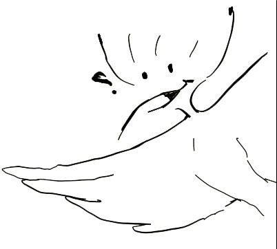

The Imaginarium
Welcome, wayfarer.
Some stories begin in a quiet classroom, with a hoopoe watching from a cage.
Others start when a child asks a question that has no answer,
and then finds the answer in a talking forest, a desert caravan, or the notes of a forgotten song.
This is not a place of comfort. Comfort is for bedtime. This is a place of stirring.
Here, a story about the unseen might share a chapter with a sentient loaf of bread. A poem about grief might rhyme with a joke about pigeons. And somewhere in between, a class of Year 6 students, and their mysterious hoopoe, Bennu, will remind you that imagination is not an escape from reality. It is how we reshape reality.
What you’ll find:
#Quest Packs that turn a simple adventure into a full‑brain workout (no tests, only portfolios and bad drawings).
#Longer Adventures that will make you miss your bus stop (or your tuk-tuk).
#Philosophical rants disguised as funny footnotes.
#Arguments between ghosts, love letters to dying stars, and footnotes that argue with the main text.
#And yes; laughter. Sometimes sharp, sometimes silly.
Because thinking too hard without joy is just another kind of prison.
So browse, download, share with friends. If something makes you laugh, tell someone. If something makes you angry, tell me (preferably with dark chocolate).
All of this exists because I believe that reading should never be a chore; it should be a small act of rebellion against the boring.
Welcome. Let’s think, laugh, and argue together.
(Bennu taps once. That means: “I’m watching you. In a nice way.”)